전자기기기능장 (2006-04-02 기출문제)
1과목: 임의구분
1. FET의 설명 중 옳지 않은 것은?
- 전압제어용 소자이다.
- BJT에 비해서 입력 임피던스가 높다
- BJT에 비해서 잡음 특성이 양호하며, 소 신호를 취급하기가 좋다.
- 소스와 게이트 사이에는 순방향 바이어스를 걸어준다.
(정답률: 80%)

2. 명령어 형식 중에서 스택(stack)을 필요로 하는 것은?
- 0-주소 명령어
- 1-주소 명령어
- 2-주소 명령어
- 3-주소 명령어
(정답률: 93%)
3. 초음파의 에너지를 크게 했을 때 일어나는 현상이 아닌 것은?
- 공동현상
- 산화작용
- 발광작용
- 입자의 집합작용
(정답률: 88%)
4. 잡음지수 8[dB]이고, 이득 10[dB]인 증폭기에 잡음지수 11[dB], 이득 10[dB]인 증폭기를 직렬로 했을 때의 종합 잡음지수는?
- 1.9[dB]
- 8[dB]
- 9[dB]
- 19[dB]
(정답률: 87%)
5. 리플레시(refresh)가 필요한 반도체 메모리는?
- SRAM
- DRAM
- EPROM
- Mask ROM
(정답률: 83%)
6. 반도체에 관한 설명 중 옳지 않은 것은?
- 매우 낮은 온도에서 절연체가 된다.
- 온도가 상승함에 따라 저항 값이 감소한다.
- 전기적 전도성은 금속과 절연체의 중간적 성질을 갖는다.
- 불순물이 섞이면 저항 값이 증가한다.
(정답률: 80%)
7. 다음 논리회로 중 fan-out이 가장 적은 논리회로는?
- TTL gate
- DTL gate
- RTL gate
- HTL gate
(정답률: 89%)
8. 평균 반지름 5[cm], 감은 횟수 10회의 원형 코일 중심의 자장 세기가 100[AT/m]일 때 코일에 흐르는 전류는?
- 1[A]
- 2[A]
- 3[A]
- 4[A]
(정답률: 67%)
9. FM 수신기에서 입력 신호가 없거나 적을 경우에 내부 잡음을 억제하는 회로는?
- 진폭 제한기
- 스켈치 회로
- 디엠퍼시스
- 주파수 판별기
(정답률: 81%)
10. 자동 제어계의 주파수 영역 내에서의 성능을 설명해 주는 정수가 아닌 것은?
- 대역폭(bandwidth)
- 분리도(cutoff rate)
- 계단 응답(step response)
- 공진 주파수(resonance frequency)
(정답률: 75%)
11. 자동 제어 조절계의 제어 편차가 검출될 때 편차가 변화하는 속도에 비례하여 조작량을 가감하도록 하는 동작은?
- on-off 동작
- 비례위치 동작
- 적분 동작
- 미분 동작
(정답률: 78%)
12. 소음이 있을 때 필요한 소리가 소음의 영향으로 잘 들리지 않는 현상은?
- 스테레오 현상
- 양이(兩耳) 효과
- 명룡(鳴龍) 현상
- 마스킹(masking) 효과
(정답률: 91%)
13. Color TV의 리모트 컨트롤에서 기능 제어용으로 가장 많이 사용되는 Signal은?
- AM 주파수
- FM 주파수
- 적외선
- 자외서
(정답률: 90%)
14. 0에서 29까지 셀 수 있는 리플 계수기를 만들려면 최소한 몇 개의 플립플롭(flip flop)이 필요한가?
- 2
- 3
- 5
- 7
(정답률: 89%)
15. 4[A]의 전류가 흐르는 경우 전력이 160[W]인 저항에 5[A]의 전류가 흐르면 전력은 몇 [W]인가?
- 150
- 250
- 350
- 450
(정답률: 90%)
16. 회전 운동계의 토크 및 관성 모멘트는 전자계의 무엇으로 대응되는가?
- 전압 및 인덕턴스
- 저항 및 콘덴서
- 전압 및 전류
- 저항 및 인덕턴스
(정답률: 93%)
17. 레이저(Laser)에 관한 설명 중 가장 옳지 않은 것은?
- 주파수 폭이 매우 좁은 단색광이다.
- 사인파의 일종으로 파장이 매우 짧다.
- 전자파의 유도 방출로 빛을 발생한다.
- 레이저의 종류에는 고체와 액체 레이저만 있다.
(정답률: 88%)
18. 아래의 논리식을 간략화하면?
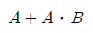
- A + B
- A
- B
- A ⋅ B
(정답률: 69%)
19. 다음 중 교류 전동기는?
- 유도 전동기
- 직권 전동기
- 분권 전동기
- 복권 전동기
(정답률: 93%)
20. 수신기 IF 증폭단에 적합한 것은?
- LPF
- BPF
- HPF
- BEF
(정답률: 63%)
2과목: 임의구분
21. 그림의 회로에서 출력 Vo는? (단, R=R1=R2=R3)
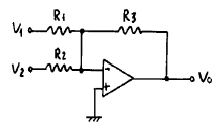
- Vo = -(V1+V2)
- Vo = V1+V2
- Vo = V1-V2
- Vo = -(V1-V2)
(정답률: 86%)
22. 주파수 변조시스템에서 대역폭은? (단, △f는 최대주파수 편이, fm은 변조 주파수이다.)
- B = (△f+fm)/4
- B = (△f+fm)/2
- B = △f+fm
- B = 2(△f+fm)
(정답률: 97%)
23. 듀티 사임클(duty cycle)이 0.1 이고, 주기가 40[μs]인 펄스의 폭은?
- 6 [μs]
- 3 [μs]
- 4 [μs]
- 5 [μs]
(정답률: 78%)
24. 마이크로컴퓨터 시스템에서 기억장치로부터 레지스터 내부로 데이터를 전송하는 것을 일반적으로 무엇이라고 하는가?
- Load
- Store
- Input
- Output
(정답률: 60%)
25. 다음 ( ) 안에 알맞은 말은?
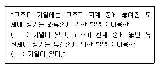
- 유도, 유전
- 와류, 유전
- 표면, 내부
- 선택, 표면
(정답률: 83%)
26. 되먹임 제어에서 꼭 있어야 할 장치는?
- 안정도를 빠르게 하는 장치
- 입력과 출력을 비교하는 장치
- 응답 속도를 빠르게 하는 장치
- 응답 속도를 느리게 하는 장치
(정답률: 83%)
27. Audio system block diagram에서 (A)항의 기능으로 옳은 것은?
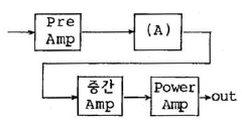
- EQ Amp
- Tone control Amp
- Speaker protector
- Power Supply
(정답률: 87%)
28. 그림의 회로에서 교류전압 110[V]를 인가하였을 때 전류[I]는?
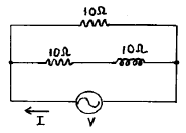
- 3+j11
- 3-j11
- 1.5+j5.5
- 16.5-j5.5
(정답률: 78%)
29. 디지털 전자계산기의 중앙 처리 장치에서 주기억 장치, 연산 처리 장치 외에 꼭 있어야 할 것은?
- 입력 장치
- 출력 장치
- 보조 기억 장치
- 제어 장치
(정답률: 89%)
30. 반가산기에서 자리올림(carry)을 바르게 나타낸 것은?
- A + B
- A ⋅ B
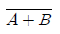
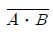
(정답률: 84%)
31. 다음 그림의 연산 결과는?
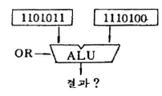
- 1100000
- 1111111
- 0011111
- 0000000
(정답률: 80%)
32. 터널 다이오드(tunnel diode)에 쓰이는 반도체 재료에 속하지 않는 것은?
- Si
- Ge
- GaAs
- CdS
(정답률: 64%)
33. 인터럽트를 발생하는 모든 장치들을 인터럽트의 우선순위에 따라 직렬로 연결하는 하드웨어 회로는?
- 벡터(vector)
- 폴링(polling)
- 인터페이스(interface)
- 데이지체인(daisy chain)
(정답률: 75%)
34. Exclusive-NOR GATE는 어느 것과 같은가?
- ADDER
- COMPARATOR
- SUBTRACTOR
- DECODER
(정답률: 88%)
35. 국부 발진주파수가 1000[kHz]일 때, 950[kHz]의 고주파를 수신하여 헤테로다인 검파하면 출력 주파수는 몇 [kHz]인가?
- 25
- 50
- 75
- 100
(정답률: 92%)
36. 마이크로프로세서의 계속적인 통제를 받지 않고 데이터를 메모리에서 독자적으로 처리할 수 있는 것은?
- SCAN
- FIFO
- DMA
- INTERRUPT
(정답률: 95%)
37. PCM(펄스부호변조)과 관계가 없는 것은?
- 동조화
- 표본화
- 양자화
- 부호화
(정답률: 91%)
38. 그림과 같은 회로의 입력에 정현파 신호가 인가되는 경우 연산증폭기를 포함한 전체 회로는 무슨 회로로서 동작하는가?
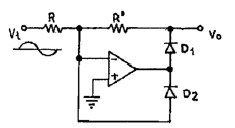
- 반파 정류회로
- 전파 정류회로
- 고역 여파기
- 저역 여파기
(정답률: 70%)
39. 전자 제도에서 블록선도(block diagram)를 그릴 때 유의해야 할 사항으로 옳지 않은 것은?
- 화살은 신호가 전달되는 방향으로 나타낸다.
- 정사각형, 직사각형 및 삼각형의 블록을 사용한다.
- 신호가 전달되는 방향은 될 수 있는 대로 오른쪽에서 왼쪽으로 한다.
- 각 블록 사이는 단선으로 연결하는 것이 원칙이나 복선을 쓸 수도 있다.
(정답률: 89%)
40. 푸시풀 증폭기에서 교차 일그러짐(cross-overdistortion)이 일어나기 쉬운 증폭기는?
- A급 증폭기
- B급 증폭기
- C급 증폭기
- AB급 증폭기
(정답률: 85%)
3과목: 임의구분
41. 아래의 부논리 게이트에 해당하는 정논리 게이트는?
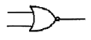
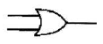
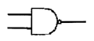
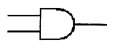
(정답률: 46%)
42. 누산기(accumulator)의 설명으로 옳은 것은?
- CPU가 해석한 명령어를 기억한다.
- CPU 내에 있는 레지스터로서 연산 결과를 일시적으로 저장한다.
- 메모리 소자 내에 있는 레지스터로서 인터럽트 주소를 저장한다.
- CPU의 명령 순서를 기억한다.
(정답률: 89%)
43. 캐비테이션(공동 작용)을 이용한 것은?
- 초음파 납땜
- 초음파 용접
- 어군 탐지
- 초음파 세척
(정답률: 94%)
44. 녹음기에서 테이프 헤드 면에 스페이싱 손실이 없이 밀착되도록 하는 것은?
- 테이프 패드(Pad)
- 캡스턴 핀치롤러
- 테이프가이드와 캡스틴
- 핀치롤러와 텐션암
(정답률: 76%)
45. 수신기의 감도를 좋게 하는데 사용되는 신호대 잡음비의 향상이나 선택도의 향상에 도움이 되는 회로를 무슨 회로라 하는가?
- 중간주파 증폭회로
- 검파회로
- 주파수 변환회로
- 고주파 증폭회로
(정답률: 65%)
46. T-Flip Flop의 명칭에 대한 설명으로 옳은 것은?
- Time의 T를 사용한 T-FF 이다.
- Transistor의 T를 사용한 T-FF 이다.
- Toggle의 T를 사용한 T-FF 이다.
- Tuning의 T를 사용한 T-FF 이다.
(정답률: 87%)
47. 4[μF]의 콘덴서에 100[V]의 전압을 가할 때 콘덴서에 저장되는 에너지는?
- 2×10-2[J]
- 3×10-2[J]
- 5×10-2[J]
- 7×10-2[J]
(정답률: 80%)
48. 오디오 앰프의 성능을 좌우하는 요소가 아닌 것은?
- S/N 비
- 고조파 찌그러짐
- 주파수 특성
- 감도
(정답률: 73%)
49. 디지털 데이터를 아날로그로 변환시키는 모뎀 방식에 해당되는 것은?
- AM
- FM
- PM
- FSK
(정답률: 85%)
50. 다음은 일상적인 가정용 VTR에서 모든 조작이 정상적으로 조정된 상태로 사용 중 Tape 주행시 재생 화면이 나오지 않을 경우 점검 할 사항과 가장 관계있는 것은?
- TV Channel의 프리셋 미조절이 틀어져 있는가
- 안테나 선이 VTR 입력과 TV 입력에 정확하게 접속 되었는가
- VTR 튜너의 수신 Channel을 정확하게 조정했는가
- CAMERA/TUNER Switch가 CAMERA 측에 있는가
(정답률: 74%)
51. 영상 출력 장치에 해당하는 것은?
- 마우스
- 타블렛
- CRT 모니터
- 키보드
(정답률: 92%)
52. JK 플립플롭에서 J=1, K=1일 때 클럭 펄스가 들어가면 출력 Q는?
- 0
- 1
- Q
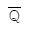
(정답률: 92%)
53. 스피커의 출력 음압 레벨을 측정하기 위해 사용되는 계측기가 아닌 것은?
- 와우ㆍ플로터 메터
- 표준 마이크
- 음압계
- 신호발생기
(정답률: 91%)
54.
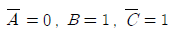
일 때 출력이 "0"이 되는 논리식은?- AB +BC
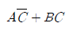
- A + B + C
- ABC
(정답률: 87%)
55. 제품 공정분석표용 공정도시기호 중 정체 공정(Delay) 기호는 어느 것인가?
- ○
- →
- D
- □
(정답률: 92%)
56. 문제가 되는 결과와 이에 대응하는 원인과의 관계를 알기 쉽게 도표로 나타낸 것은?
- 산포도
- 파레토도
- 히스토그램
- 특성요인도
(정답률: 56%)
57. 계수값 규준형 1회 샘플링 검사에 대한 설명 중 가장 거리가 먼 내용은?
- 검사에 제출된 로트에 관한 사전의 정보는 샘플링 검사를 적용하는데 직접적으로 필요로 하지 않는다.
- 생산자측과 구매자측이 요구하는 품질보호를 동시에 만족시키도록 샘플링 검사방식을 선정한다.
- 파괴검사의 경우와 같이 전수검사가 불가능한 때에는 사용할 수 없다.
- 1회만의 거래시에도 사용할 수 있다.
(정답률: 58%)
58. 표준시간을 내경법으로 구하는 수식은?
- 표준시간 = 정미시간 + 여유시간
- 표준시간 = 정미시간 × (1+여유율)
- 표준시간 = 정미시간 ×(1/1-여유율)
- 표준시간 = 정미시간 ×(1/1+여유율)
(정답률: 69%)
59. 다음 표를 이용하여 비용 구배(cost slope)를 구하면 얼마인가?
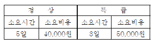
- 3,000원/일
- 4,000원/일
- 5,000원/일
- 6,000원/일
(정답률: 78%)
60. 다음 중 부하와 능력의 조정을 도모하는 것은?
- 진도관리
- 절차계획
- 공수계획
- 현품관리
(정답률: 59%)